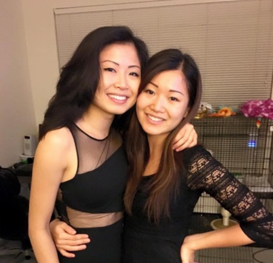
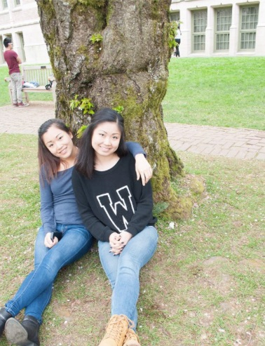
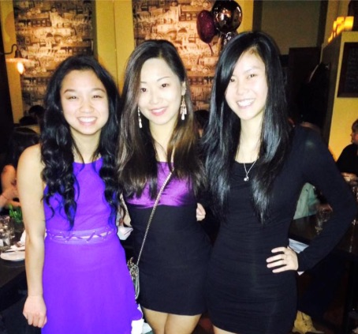
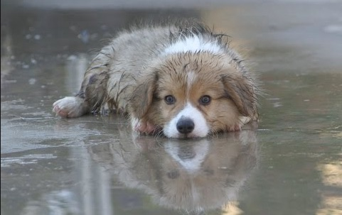
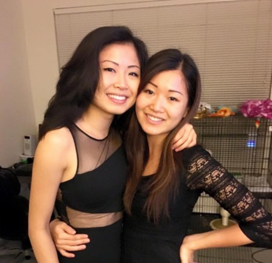
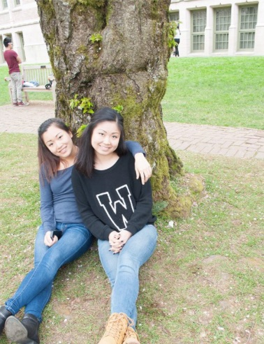
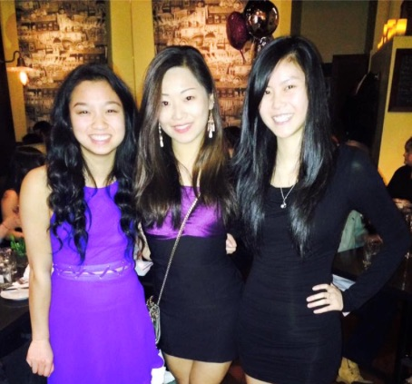
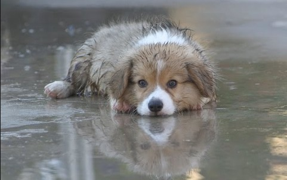

Yuri Aoshima
Yuri Aoshima graduated in the Spring of 2016 from the University of Washington with a degree in Electrical Engineering. She focused on embedded programming and computer architecture for most of her undergraduate career. She interned for several engineering firms during her undergrad, finally deciding to work for Boeing full time as an electrical engineer in their Engineering Career Foundation Program. She is an avid learner, always looking to learn and try new things. On her free time, she enjoys reading novels, her latest being "After You", watching Netflix, sleeping, hiking, and trying new foods. She is adept at programming in Verilog and C and plans on adding web development, python, c++ and more to her skills list.
Yuri's Current Work
Yuri is currently in the progress of obtaining a certificate in web development through the University of Washington's continuing education program. With the new certificate, Yuri hopes to broaden her knowledge base as well as open more career opportunities in the future. To view her current and completed web development projects, click here.
In addition to taking classes for her web development certificate, Yuri is a full time electrical engineer at The Boeing Company. As an undergraduate Yuri intered for The Boeing Company down in Huntington Beach, CA working on integrated circuits. She is currently part of the Engineering Career Foundation Program where she has the opportunity to rotate to different groups every six months.
Memories
 






